Procesamiento del Lenguaje Natural y Reconocimiento del Habla · Clase 10
10 - Transformers - Teoría Simplificada
Contenido convertido sin ejecutar Python. Se conservan las salidas guardadas; las figuras matemáticas sustituidas y los gráficos de PE están identificados en el registro de revisión.
La arquitectura Transformer es una forma de procesar información que se utiliza en la inteligencia artificial, y fue presentada por Vaswani et al. (2017).
En la arquitectura Transformer, hay dos partes principales: el codificador y el decodificador.
El codificador es como una caldera donde se **introduce la información para que sea procesada. **El proceso de codificación implica tomar una secuencia de palabras, números o cualquier otro tipo de información, y convertirla en una representación numérica que pueda ser procesada por la computadora.
El decodificador, por otro lado, es como una turbina que toma la información codificada y la utiliza para producir una respuesta. El proceso de decodificación implica tomar la representación numérica generada por el codificador y utilizarla para generar una nueva secuencia de palabras, números o cualquier otro tipo de información que tenga sentido en el contexto.
Además, en la arquitectura Transformer, se utiliza algo llamado atención para enfocarse en partes importantes de la secuencia de entrada y producir una salida relevante. La atención es como un sistema de control en la central térmica, que monitorea y ajusta la entrada y la salida de energía para asegurar un rendimiento óptimo.
En resumen, la arquitectura Transformer **es un sistema complejo de procesamiento de información que utiliza un codificador para transformar la entrada en una representación numérica, un decodificador para generar una respuesta y atención para enfocarse en partes importantes de la secuencia de entrada y producción de salida.**Así, se puede entender y generar lenguaje natural de manera más efectiva en las aplicaciones de inteligencia artificial.
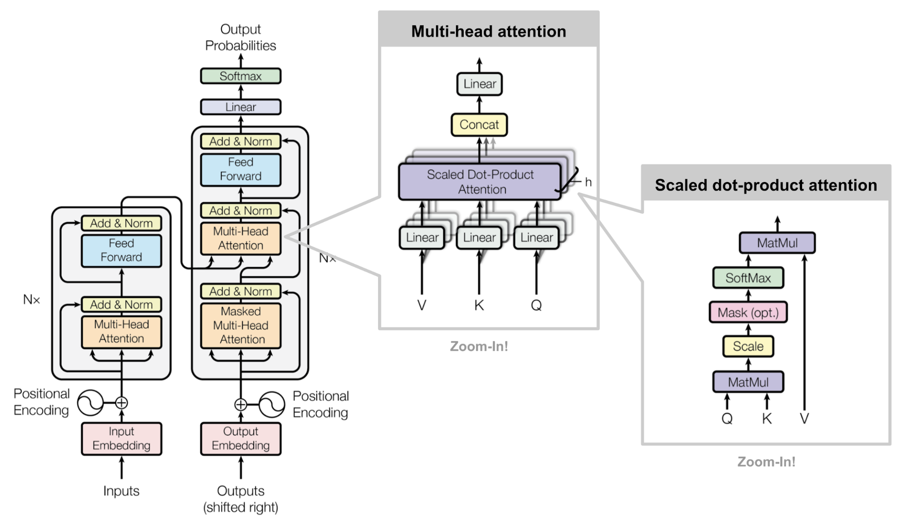
1.1. Vectores: Key, Value y Query
En self-attention se aprenden tres proyecciones: , y . No son necesariamente tres redes independientes: son transformaciones entrenadas conjuntamente.
La puntuación depende de normas y direcciones. Tras softmax, cada fila contiene pesos no negativos que suman uno. La salida combina valores de posiciones permitidas por la máscara. V no es por sí solo la traducción ni la predicción final.
Analogía Q/K/V: Q expresa qué busca una posición; K permite comparar posiciones; V aporta el contenido que se mezcla. Son vectores aprendidos: no hay una coordenada obligatoria para «cuatro patas» ni una traducción ya contenida en V.
model_version='bert-base-uncased'model=BertModel.from_pretrained(model_version,output_attentions=True)tokenizer=BertTokenizer.from_pretrained(model_version)sentence_a="Understanding how the Transformer Architecture works"sentence_b="Attention mechanisms help to understand the whole context in a sentence or any sequence of numbers"inputs=tokenizer.encode_plus(sentence_a,sentence_b,return_tensors='pt')input_ids=inputs['input_ids']token_type_ids=inputs['token_type_ids']attention=model(input_ids,token_type_ids=token_type_ids)[-1]sentence_b_start=token_type_ids[0].tolist().index(1)input_id_list=input_ids[0].tolist()# Batch index 0tokens=tokenizer.convert_ids_to_tokens(input_id_list)
1.1.1. Visualización del Bloque Head Attention
La visualización del bloque de Head Attention muestra la atención en una o más cabezas de atención desde una sola capa Transformer. Cada línea muestra la atención desde un token (izquierda) hacia otro (derecha). El grosor de la línea refleja el valor de la atención (que varía entre 0 y 1), mientras que el color de la línea identifica la cabeza de atención. Cuando se seleccionan múltiples cabezas (indicado por las casillas de color en la parte superior), las visualizaciones correspondientes se superponen entre sí.
Colocar el cursor sobre cualquier token en el lado izquierdo/derecho de la visualización para filtrar la atención desde/hacia ese token.
Hacer doble clic en cualquiera de los cuadros coloreados en la parte superior para filtrar a la cabeza de atención correspondiente.
Hacer clic una vez en cualquiera de los cuadros coloreados para alternar la selección de la cabeza de atención correspondiente.
Haz clic en el menú desplegable "Layer" para cambiar la capa del modelo (indexada en cero).
Código Python · celda 15
head_view(attention,tokens,sentence_b_start)
Layer:
Attention:
1.1.2. Visualización de la Atención en todo el Modelo
La vista del modelo proporciona una vista aérea de la atención en todo el modelo. Cada celda muestra los pesos de atención para una cabeza particular, indexados por capa (fila) y cabeza (columna).
Las líneas en cada celda representan la atención desde un token (izquierda) hacia otro (derecha), con el grosor de la línea proporcional al valor de atención (que varía de 0 a 1).
El uso de la herramienta es el siguiente:
Hacer clic en cualquier celda para ver detalladamente la atención para la cabeza de atención asociada (o para anular la selección de esa celda).
Luego, colocar el cursor sobre cualquier token en el lado izquierdo de la vista detallada para filtrar la atención desde ese token.
Código Python · celda 18
model_view(attention,tokens,sentence_b_start)
Attention:
1.2. Auto Atención Multi Cabezal (Multi-Head Self-Attention)
El componente principal de la arquitectura tranformer es la unidad o mecanismo de auto-atención multi-cabezal (multi-head self-attention mechanism).
Esto significa que el modelo mira los datos de entrada como pares de clave y valor (), y luego los procesa para producir una salida.
En el decoder, la salida anterior se usa para producir la siguiente salida. Todo esto se hace usando una técnica llamada atención producto escalado, que usa una ponderación para determinar la importancia de cada valor en la salida final. En lugar de hacer esto solo una vez, el modelo realiza esta operación muchas veces en paralelo y luego combina los resultados.
1.2.1. Creación de los Vectores: (), Key () y Value ()
El primer paso, es crear tres vectores por cada vector de entrada del encoder (en el contexto de NMT, el vector de embedding de cada palabra), es decir, para cada palabra se crean los vectores , y respectivamente multiplicando el vector de embedding por tres matrices que se entrenan.
Para que el cálculo de la auto-atención multi-cabezal tienda a ser constante, los nuevos vectores son de una dimensión más pequeña que el propio vector de embedding, más especificamente: , donde es la dimensionalidad y se refieren a los vectores query, key y value respectivamente.
A continuación se muestra un ejemplo de la generación de dichos vectores para la frase: "Thinking Machines.-"
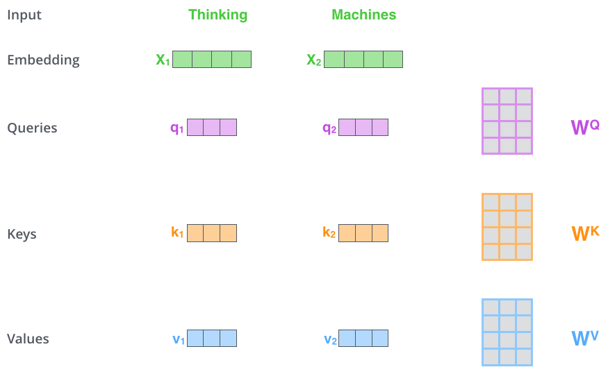
Figura tomada de \cite{alammar2018illustrated}. Vectores generados para la frase: "Thinking Machines." Al multiplicar por la matriz de peso se produce , el vector "consulta" () asociado con esa palabra. Terminamos creando una proyección de "consulta" (), "clave" () y "valor" () de cada palabra en la oración de entrada. Las dimensiones de las matrices , y en la arquitectura Transformer son , donde es la dimensión de entrada del modelo y es la dimensión de la capa de atención (que el paper origianl es ). Estas matrices se utilizan en la operación de atención dentro de la red para calcular la salida de cada capa de atención..
Es decir, los vectores de consulta, valor y clave se crean mediante la proyección lineal de cada palabra en la entrada a tres subespacios diferentes. Para ser más específicos, cada palabra en la entrada se multiplica por tres matrices de peso diferentes, llamadas matrices de proyección de consulta (), de clave () y de valor (), para producir tres vectores diferentes: la proyección de consulta (), la proyección de clave () y la proyección de valor ().
Estos tres vectores se utilizan en la función de atención para calcular la salida de la red.
La proyección de consulta se utiliza para calcular la similitud entre la palabra actual y todas las palabras en la entrada;
La proyección de clave se utiliza para recuperar la información relevante de la entrada,
y la proyección de valor se utiliza para calcular el valor de salida final.
En resumen, la creación de vectores de consulta, valor y clave es un paso clave en la arquitectura Transformer para procesar información de manera efectiva mediante la atención.
1.2.1.1. Cálculo de la Puntuación (Score)
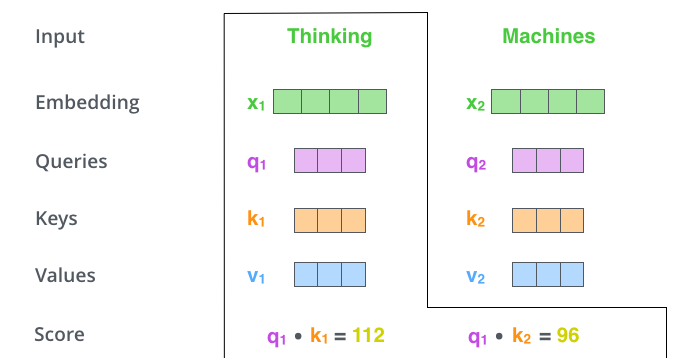
Siguiendo el ejemplo del paso anterior, el segundo paso consiste en calcular la auto-atención para la primera palabra, en este caso, "Thinking".
Por lo tanto, necesitamos calcular la puntuación (score) de cada palabra de entrada contra la palabra "Thinking". Dicha puntuación determina cuánta atención poner en diferentes partes de la oración de entrada mientras se codifica una palabra en una posición determinada.
La puntuación, se calcula tomando el producto escalar del vector query con el vector key de la palabra respectiva que se está puntuando. Es decir: , con siendo la dimensionalidad del vector key (vectores keys generados para todas las palabras de la oración).
1.2.1.2. Estabilización de los Gradientes y Normalización de las Puntuaciones
El tercer paso consiste en calcular la raíz cuadrada de la dimensión de los vectores keys () y dividir las puntuaciones por dicho valor
Con estas operaciones se logra tener gradientes más estables. Luego, se normalizan las puntuaciones aplicando la función softmax para que todas sean positivas y sumen 1, es decir:
De esta manera, cada puntuación softmax determina cuánto se expresará cada palabra en una determinada posición, es decir, se presta atención a la palabra actual y también a las palabras relacionadas con la palabra actual.
A continuación, se muestra gráficamente los pasos descriptos.
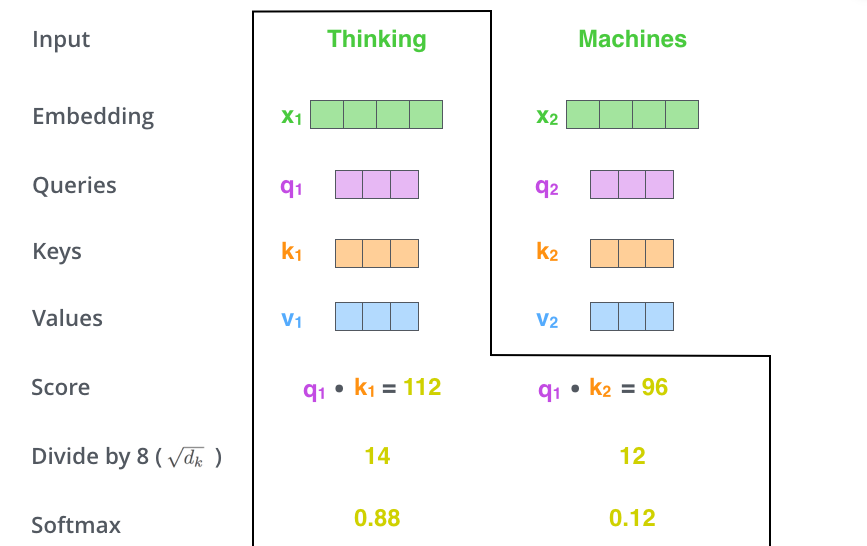
Se dividen las puntuaciones por (la raíz cuadrada de la dimensión de los vectores de clave utilizados en el artículo, que es ) para tener gradientes más estables. Podría haber otros posibles valores aquí, pero este es el valor por defecto. Luego, el resultado se pasa por una operación softmax. Softmax normaliza las puntuaciones para que todas sean positivas y sumen 1.
1.2.1.3. Vector Value y Puntuación
El quinto paso consiste en multiplicar cada vector por la puntuación , es decir, lo que se quiere lograr es mantener "intactos" los valores de las palabras en las que queremos prestar atención y atenuar la atención en las palabras que sean irrelevantes (multiplicando por un número real pequeño, por ej., ).
Como sexto paso, se realiza una suma ponderada de los vectores . Esto produce la salida de la capa de auto-atención en una posición determinada, en este caso, para la primera palabra.
Finalmente, como resultado se obtiene un vector el cual se puede enviar a lo largo de la red neuronal feed-forward. Dado que es un cálculo computcionalmente costoso, esta operación se realiza a través de matrices. En las siguientes secciones se detalla dicha operación.
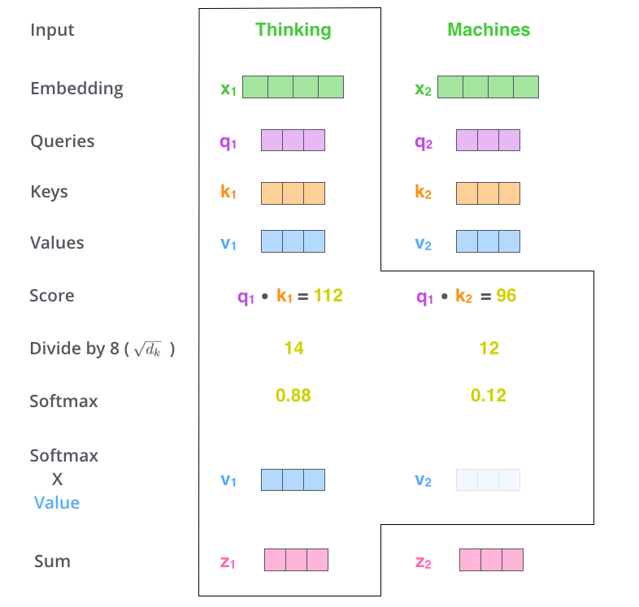
Figura tomada de \cite{alammar2018illustrated}. Cálculo de la suma ponderada de las puntuaciones softmax y los vectores de la frase: "Thinking Machines."
Eso concluye el cálculo de auto-atención. El vector resultante es uno que podemos enviar al feed-forward neural network. En la implementación real, sin embargo, este cálculo se realiza en forma de matriz para un procesamiento más rápido. Así que veamos eso ahora que hemos visto la intuición del cálculo a nivel de palabra.
1.2.1.4. Cálculo Matricial de la Auto-Atención
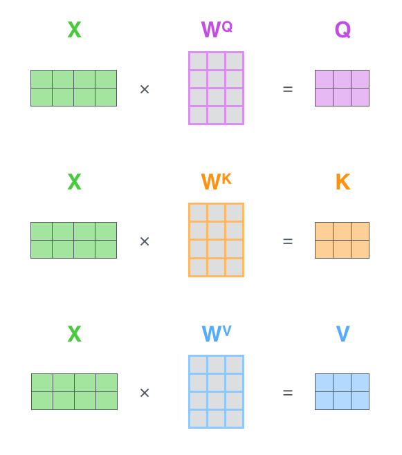
Figura tomada de \cite{alammar2018illustrated}. Cada fila en la matriz se corresponde a una palabra en la oración de entrada. Podemos ver la diferencia de las dimensiones del vector de embedding, (dimensionalidad de la entrada y de la salida), en el ejemplo columnas del vector fila y las dimensiones de las matrices: , y donde .
Finalmente, podemos resumir los pasos descriptos anteriormente (del paso dos al paso seis) de la siguiente manera:
A continuación se muestra dicha operación gráficiamente.
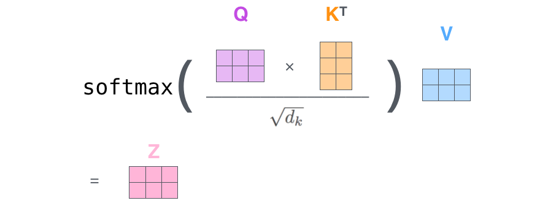
Figura tomada de \cite{alammar2018illustrated}. Cálculo de la auto-atención en forma matricial.
1.2.2. Multi-Head Self-Attention en Detalle
Cada cabeza tiene matrices aprendidas . Q, K y V son activaciones calculadas, no pesos. El Transformer base del artículo usa 8 cabezas y ; son elecciones de esa configuración, no constantes de todos los Transformers.
Las matrices W son parámetros compartidos entre posiciones. Al multiplicar las entradas por ellas se obtienen Q, K y V, que cambian con la entrada. Distintas cabezas pueden aprender patrones diferentes, pero no están obligadas a especializarse en funciones lingüísticas separadas.
Si realizamos el mismo cálculo de la auto-atención que se describió anteriormente, es decir, ocho veces con diferentes matrices de pesos, obtendremos ocho matrices diferentes. Graficamente:
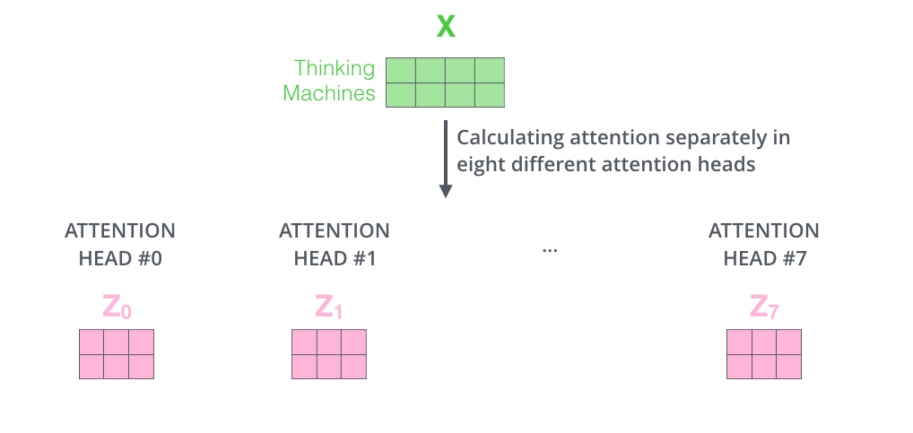
Fig. tomada de \cite{alammar2018illustrated}.
Dado que la capa feed-forward no está esperando recibir como entrada ocho matrices, sino que sólo espera recibir una matriz (un vector por cada palabra), se realiza una concatenación de las matrices mutlplicándolas por una matriz de peso adiconal (que fue entrenada conjuntamente con el modelo). Por lo tanto, el resultado debería ser una matriz que contiene información de todos los cabezales de atención para luegos enviarlo a la red FFNN. Matemáticamente se tiene que:
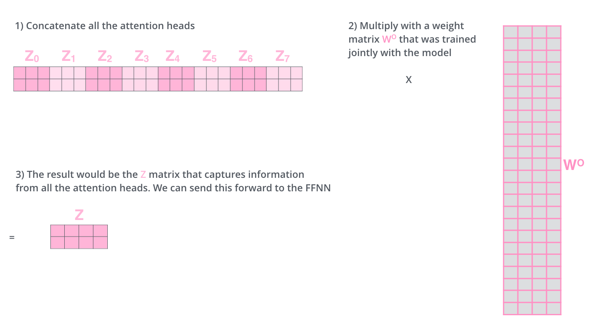
Fig. tomada de \cite{alammar2018illustrated}. Concatenación de las matrices.
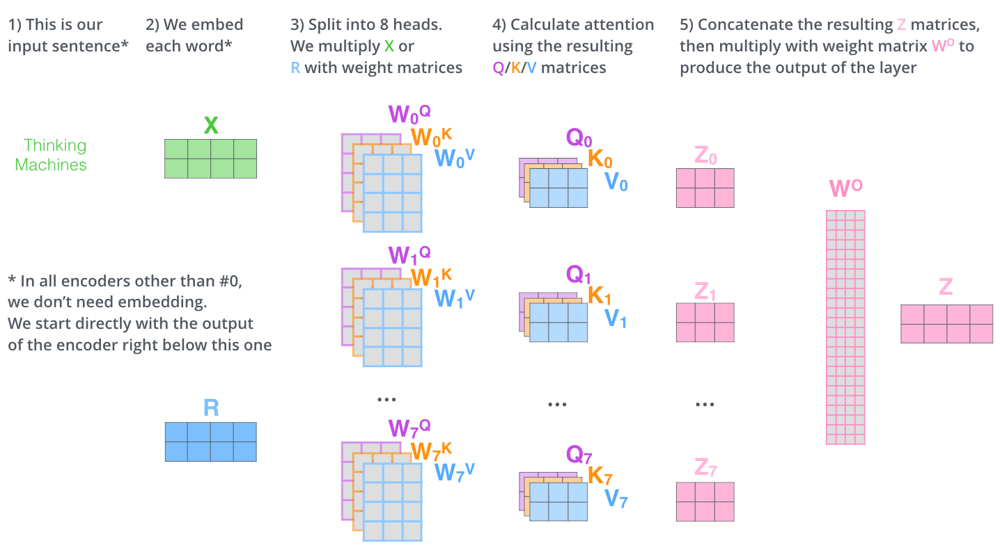
1.3. Encoder
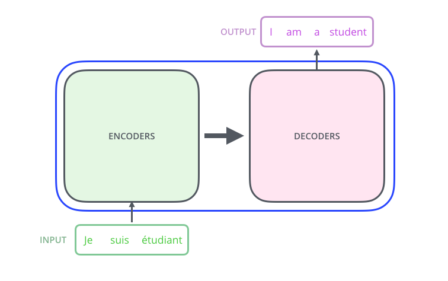
Fig. tomada de \cite{alammar2018illustrated}. Caja negra de la arquitectura transformers.
El encoder es una pila de encoders (se utilizan seis encoders situados inmediatamente uno arriba del otro -según el artículo original, se pueden experimentar con otros arreglos-). El decoder es una pila de decoders (seis decoders).
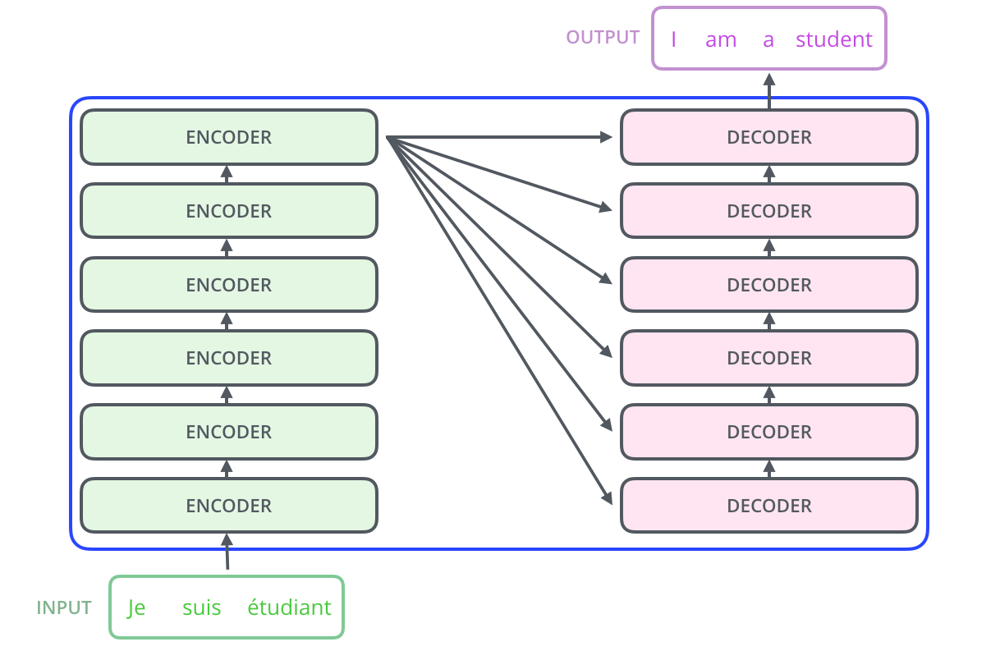
Fig. tomada de \cite{alammar2018illustrated}. Pila de encoders y decoders
Los encoders tienen todos una misma estructura, cada uno de ellos se divide en dos subcapas: (1) capa de auto-atención (descripta anteriormente) y (2) una FFNN (Feed Forward Neural Network).
Las salidas de la capa de auto-atención son enviadas a la FFNN (aplicada independientemente para cada posición de las palabras).
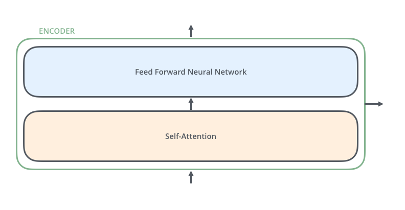
Fig. tomada de \cite{alammar2018illustrated}. Subcapas por cada encoder.
1.3.1. Word-Embedding
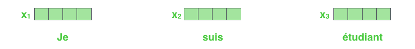
Fig. tomada de \cite{alammar2018illustrated}. Cada palabra está representada por un vector de embedding de tamaño igual a .
La primera capa recibe embeddings con información posicional. Las siguientes reciben representaciones contextuales del mismo ancho. El largo del batch puede variar mediante padding y máscaras dentro del contexto admitido; no tiene que ser la oración más larga de todo el entrenamiento. El decoder también tiene embeddings de sus tokens de entrada.
Fig. tomada de \cite{alammar2018illustrated}. Subcapas por cada encoder.
Aquí se puede observar la clave de la arquitectura transformer, cada palabra en cada posición fluye a través de su propio camino en el encoder, pero existen dependencias entre estos caminos en la capa de auto-atención. Sin embargo, la capa de FFNN no tiene estas dependencias y, por lo tanto, los diferentes caminos se pueden ejecutar en paralelo mietrnas fluyen a través de la capa FFNN.
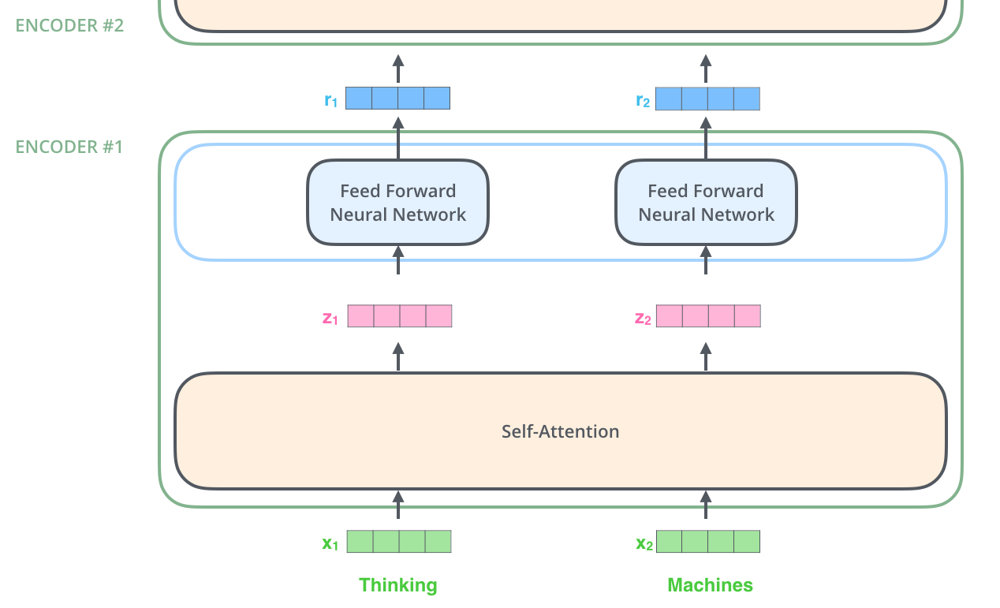
Fig. tomada de \cite{alammar2018illustrated}. Salida del encoder que será la entrada del siguiente encoder en la pila de encoders de la arquitectura. La palabra en cada posición pasa a través del proceso de auto-atención. Luego, cada una de ellas pasa a través de una FFNN -la misma capa FFNN se ejecuta de manera independiente con cada vector que fluye a través de ella.
1.3.2. Codificación Posicional
La atención sin información de posición es equivariante a permutaciones de sus entradas. La codificación posicional introduce orden; puede ser aditiva, relativa o rotatoria según la arquitectura. No garantiza crear distancias semánticas significativas ni que toda representación absoluta permita una extrapolación fiable.
Fig. tomada de \cite{alammar2018illustrated}. Para el orden de las palabras, se añaden vectores de codificación posicional a los vectores de embedding de entrada (cuyos valores siguen un patrón específico).
1.3.2.1. Intuición
Vamos a "deducir" la respuesta utilizando un enfoque de física. Crearemos algunas teorías/suposiciones simples sobre cómo lograr nuestra tarea, y luego las mejoraremos lentamente hasta obtener una codificación que satisface en gran medida lo que queremos.
1.3.2.1.1. Contar las Posiciones
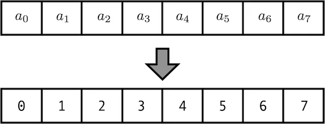
Fig. tomada de link. La longitud de la secuencia de entrada es .
Sumar directamente el índice de posición puede introducir una escala que crece con la longitud. Es una decisión de diseño que requiere controlar escalas; no significa que los pesos de toda red deban estar alrededor de cero ni que usar índices grandes provoque necesariamente gradientes explosivos.
Fig. tomada de link. Normalizamos cada entrada dividiendo por la longitud de la secuencia ().
Dividir el índice por la longitud representa una posición relativa: el mismo índice cambia de valor si cambia el largo. Eso puede ser útil para ciertas tareas, pero no identifica una posición absoluta de forma independiente de la secuencia. No demuestra que sea imposible trabajar con longitudes variables.
Lo único que hace esta dimensión de embedding es decirnos cuán grandes pueden ser nuestras secuencias, exactamente . Para simplificar, elijamos que sea igual a , la dimensión de embedding que usará nuestro modelo.
1.3.2.1.4. Continuidad
La codificación sinusoidal del Transformer es una elección explícita de funciones, no una interpolación obligatoria de bits:
Los pares recorren distintas frecuencias angulares. Una dimensión no representa un bit ni una cantidad fija de significado.
Cada posición tiene un vector de componentes sinusoidales. El orden de dimensiones depende de la convención gráfica. En la fórmula usual las frecuencias disminuyen al aumentar el índice de pareja; no se duplican sensibilidades como en un contador binario.
En la fórmula original la frecuencia angular de la primera pareja es 1 radián por posición y la pareja i usa 10000^(−2i/d). No se usa la sucesión π/2, π/4, π/8. Agrupar o intercalar senos y cosenos es una permutación de dimensiones si se mantiene la misma convención en todo el cálculo.
Este gráfico usa una visualización que agrupa senos y cosenos por separado. La formulación intercalada asigna seno a dimensiones pares y coseno a impares; ambas disposiciones se relacionan por una permutación fija de columnas.
1.3.3. Conexiones Residuales
En cada subcapa de los encoder de la pila (auto-atención y FFNN), cada encoder tiene una conexión residual a su alrededor, y es seguida por un paso de normalización de capa.
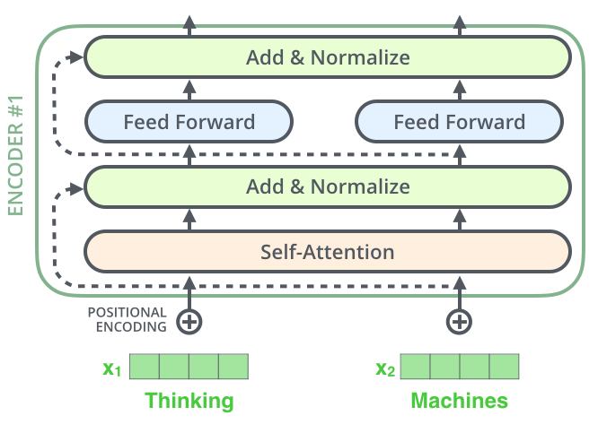
Fig. tomada de \cite{alammar2018illustrated}.
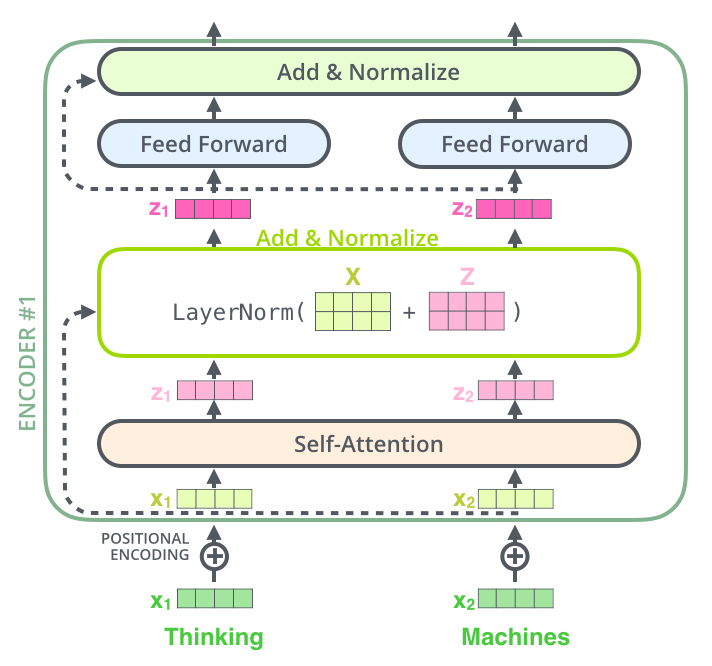
Fig. tomada de \cite{alammar2018illustrated}.
1.4. Decoder
El decoder tiene una estructura similar a la del encoder. Las capas de auto-atención y FFNN están presentes, pero en el medio tiene una capa de atención que ayudar al decoder a enfocarse en las partes relevantes de la oración de entrada (similar a lo que hace la atención en los modelos seq2seq).
El encoder comienza por procesar la secuencia de entrada. La salida del encoder superior se transforma luego en un conjunto de vectores de atención y . Estos serán utilizados por cada decoder en su capa de "atención del encoder-decoder" que ayuda al decodificador a enfocarse en los lugares apropiados en la secuencia de entrada:
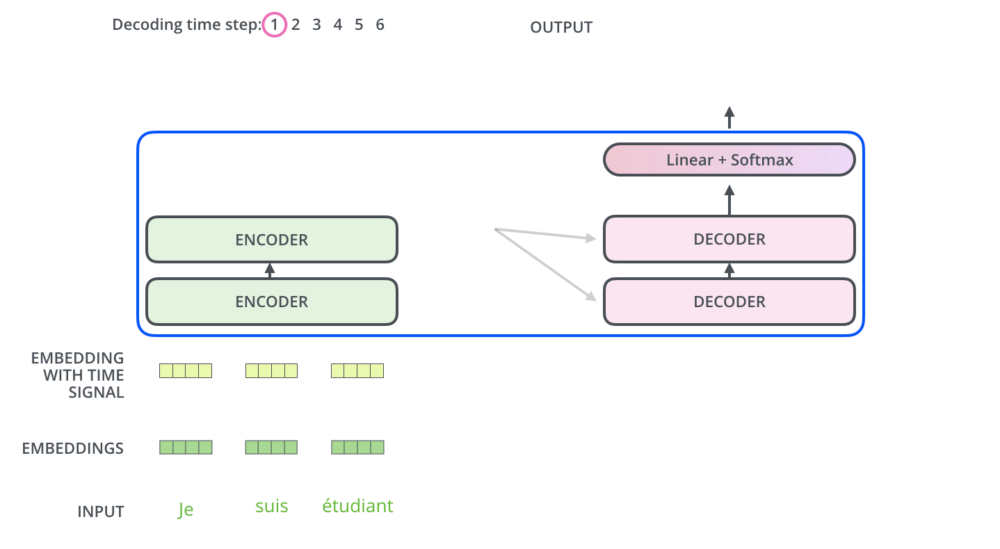
Cada paso de la fase del decoder genera un elemento de la secuencia de salida (en este caso, la traducción al inglés de una frase en francés). Los pasos repiten el proceso hasta que se alcanza un símbolo especial que indica que el decoder del transformer ha completado su salida.
La salida en cada paso se envía al decoder inferior en el siguiente paso de tiempo, y los decoders aumentan sus resultados de decodificación al igual que lo hicieron los encoders.
Al igual que las entradas para los encoders, se realiza el embedding y la codificación posicional para las entradas de los decoders para indicar la posición de cada palabra.
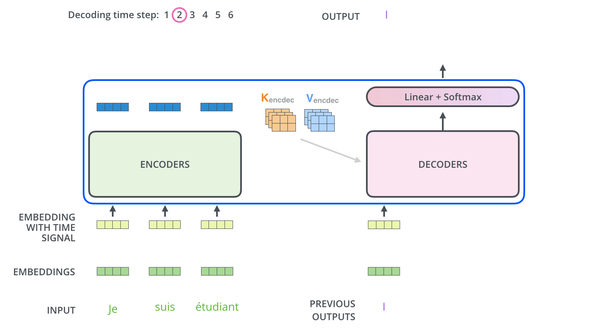
La self-attention causal permite atender a la posición actual y a posiciones anteriores; bloquea las futuras antes del softmax. La cross-attention usa consultas del decoder y claves/valores del encoder. Durante entrenamiento, teacher forcing y la máscara permiten calcular muchas posiciones a la vez; durante generación autorregresiva se incorporan tokens sucesivamente.
Imagina que la arquitectura Transformer es una central térmica y que el decoder es el operario encargado de generar la salida, es decir, la energía eléctrica.
El decoder recibe como entrada el vector de salida del encoder, que contiene la información de la entrada transformada. Este vector es similar a la energía térmica que se utiliza en la central.
El operario del decoder comienza por generar un vector inicial, que es similar a generar una chispa en la central que inicia el proceso de combustión. Este vector inicial se llama "start of sequence" o SOS.
Luego, el decoder procesa el vector de salida del encoder y el vector inicial SOS a través de múltiples capas de atención y feedforward. En términos de la central térmica, estas capas serían como los diferentes procesos de combustión y generación de energía eléctrica.
En cada capa, el decoder utiliza la información de atención para centrarse en partes específicas del vector de salida del encoder. Es como si el operario de la central dirigiera la energía térmica a través de diferentes tuberías para que llegue a la parte de la central que genera más energía eléctrica.
Finalmente, después de pasar por todas las capas, el decoder genera un vector de salida que representa la secuencia de salida, similar a la energía eléctrica generada por la central. Este vector se puede utilizar para predecir la siguiente palabra en una oración, por ejemplo.
1.5. Capa Lineal y Softmax
La proyección de salida produce un logit por token del vocabulario. Softmax los convierte en una distribución sobre ese eje. Greedy decoding elige el máximo; también se pueden usar muestreo o beam search. El vocabulario suele contener subpalabras, no necesariamente palabras completas.